Sphero Simulink Library and Examples
This example describes the Simulink library for the Sphero Connectivity package, and how the blocks from the library can be used to control a Sphero.
Contents
Sphero Simulink blocks
The Sphero Connectivity Package comes equipped with a Simulink library containing basic sensing and actuation blocks.
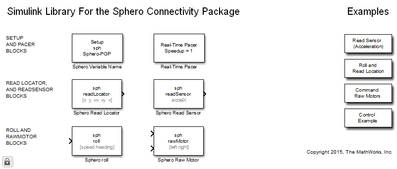Specifically, the Setup block is needed to select a preexisting workspace Sphero object for simulation. That preexisiting Sphero object is then used during the simulation by the other blocks that specify the same name. If you want to use different Spheros in the same simulation then each of them must have its own Setup block.
The Real Time Pacer block can be used to slow down a fast simulation so it can track real time.
The Read Sensor block calls the MATLAB "readSensor" function, which returns the value of a specified sensor.
The Read Locator block calls the MATLAB "readLocator" function, which returns the current location and velocity components of the Sphero.
The Roll block calls the MATLAB "roll" function to move the Sphero.
The Raw Motor block calls the MATLAB "rawMotor" function to directly (and independently) command the speed ot the two sphero motors (wheels).
Also note that you can open the simulink example models (which will be shown shortly thereafter), by double clicking on the three blocks on the right.
Using the Read Sensors blocks to read acceleration
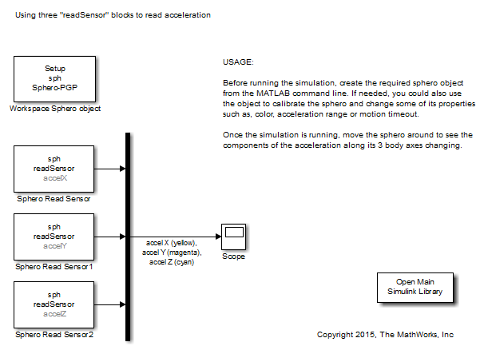 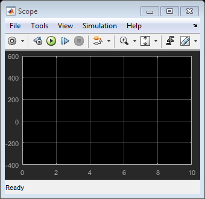This example uses three Read Sensor Roll blocks to sense acceleration along the three body axis of the Sphero.
The readSensor block can be used to sense any of the following signals: 'accelX', 'accelY', 'accelZ', 'gyroX', 'gyroY', 'gyroZ','rmotorEmfRaw', 'lmotorEmfRaw', 'lmotorPwmRaw', 'rmotorPwmRaw','imuPitch', 'imuRoll', 'imuYaw', 'accelXFilt', 'accelYFilt','accelZFilt', 'gyroXFilt', 'gyroYFilt', 'gyroZFilt','rmotorEmfFilt', 'lmotorEmfFilt', 'Q0', 'Q1', 'Q2', 'Q3', 'distX','distY', 'accelOne', 'velX', 'velY'
A sphero object must be created in the workspace before starting the simulation.
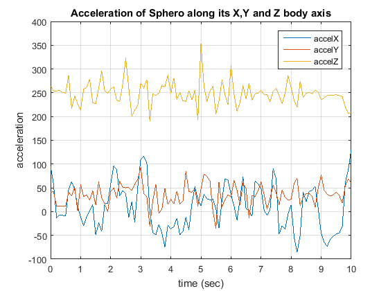Open-loop simulation example using Roll block
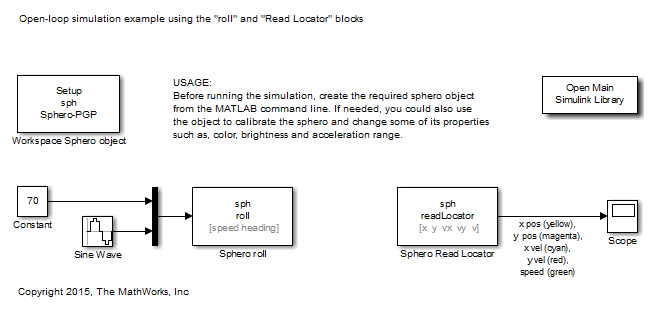 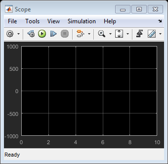This example uses the Roll block to move the sphero, along a direction specified by a sinusoid, with a constant speed of 70/255. This should move the sphero along a path resembling an eight figure.
The Read Locator block is used to gather the Sphero's position and velocity.
A sphero object must be created in the workspace before starting the simulation.
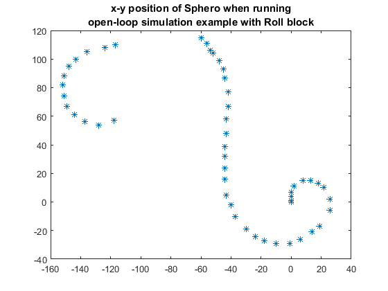Open-loop simulation example with Raw Motor block
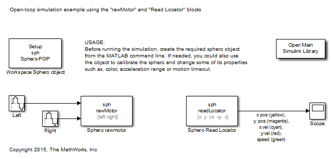 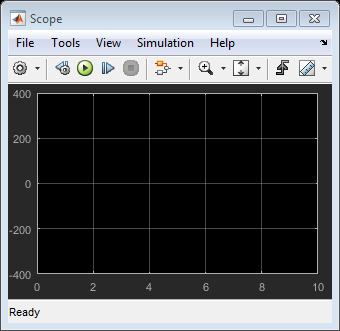This example uses the Raw Motor block to independently command the speed of the two sphero wheels, following two sinusoids with a pi/2 phase difference. This should move the sphero along a circular path.
The Read Locator block is used to gather the Sphero's position and velocity.
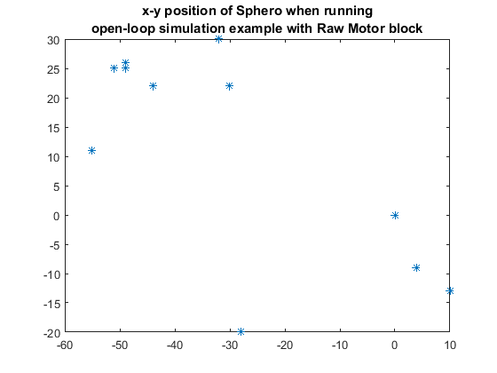Closed-loop simulation example using Roll block
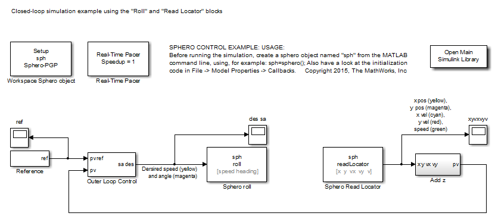
In this example, the "desired speed" block works as a controller. It commands the desired velocity (speed and angle) of the sphero, in order to minimize the difference between a reference and the measured position and velocity.
The reference position and velocity are generated by the "Reference" block, depending on a set of points (arranged in a square) to be visited at a particular time. Both point positions and time are parameters of the block.
The sphero position and velocity are retrieved by the "Read Locator" block.
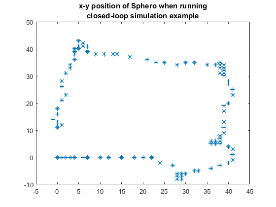See Also
Sphero Connectivity Package Examples
Copyright 2015, The MathWorks, Inc.